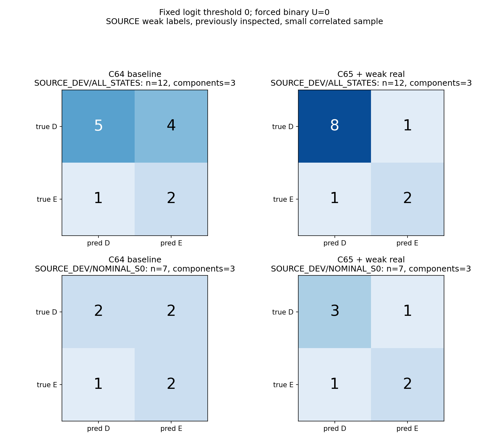
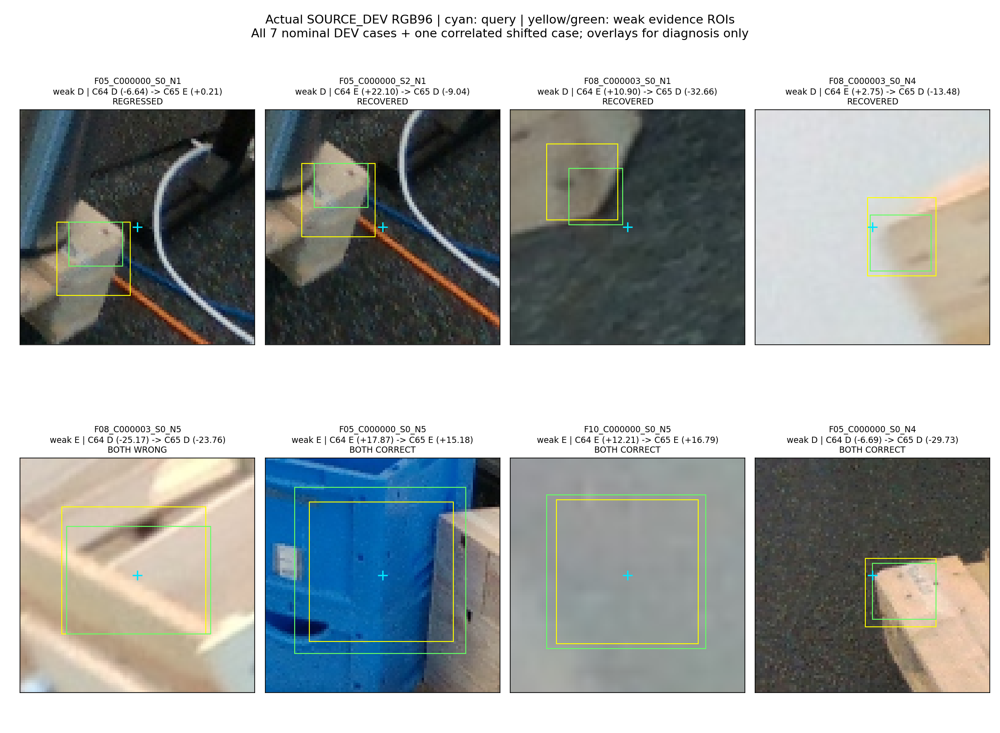

F05_C000000_S0_N1

weak D · C64 D → C65 E
DEV regression: visible part sits left/below query; C65 +0.212 is near zero.
공개 실사의 내부 DEV 12행(3 component)에서 D recall 55.56% → 88.89%, E precision 33.33% → 66.67%, E recall 66.67%로 동일합니다. 4행 회복·1행 악화. 원형 7행에서는 순증 1행입니다.
현재 평가 223장·v61·기존 모델 대비 개선은 이번 단계에서 측정하지 않았습니다. 약한 부재 라벨, GT 유래 학습 query, 이전에 관찰한 작은 SOURCE 검증 표본입니다. 새 blind 평가·정확한 물리 키포인트 gold가 아닙니다.
데이터·목표·한계 전체 보고서 · 57행 실제 crop 전체 표 · precision/recall CSV

아래 원본 crop은 진단 표시 없이 저장된 RGB96 그대로입니다. 전체 DEV 원형 7개와 상관된 이동 변형 1개를 표시합니다. 도식의 청록 query·노랑/초록 근거 상자는 학습 입력에 없습니다.
weak D · C64 D → C65 E
DEV regression: visible part sits left/below query; C65 +0.212 is near zero.

weak D · C64 E → C65 D
Same nominal part with +0.25L vertical query shift; recovered, not independent.

weak D · C64 E → C65 D
Visible deck against dark background; false E becomes D.

weak D · C64 E → C65 D
Visible thin deck edge against bright background; false E becomes D.

weak E · C64 D → C65 D
Both miss weak E: crossing wood remains plausible target-looking wood.

weak E · C64 E → C65 E
Both detect weak E: blue foreground object is visually distinct.

weak E · C64 E → C65 E
Both detect weak E; crop alone gives little target identity information.

weak D · C64 D → C65 D
Both preserve weak D; small wood patch against dark background.

겹친 목재를 기대 부재로 오인하는 사례와 crop 이동에 따라 판단이 달라지는 사례가 남았습니다. 부재의 가시성과 물리 키포인트 한 점의 직접 가시성 차이는 미해결입니다.
같은 초기 상태·같은 기존/합성 지점 추출·각 4,000회, 전체 118,359개 파라미터를 학습했습니다. 두 최종 모델을 모두 동결한 뒤에 DEV 출력을 만들었습니다. 두 모델을 보존했고 채택 모델은 없습니다. PnP 없음, 보호 평가 접근 없음.